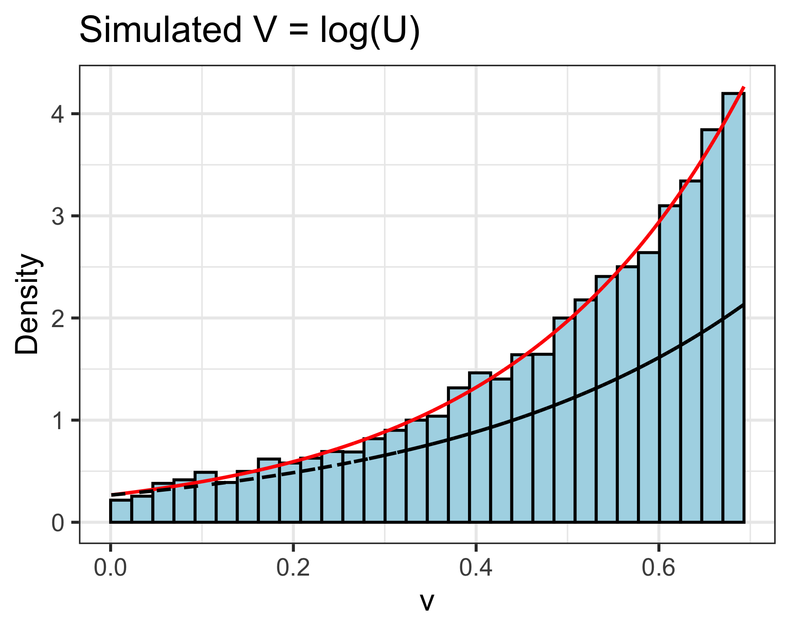
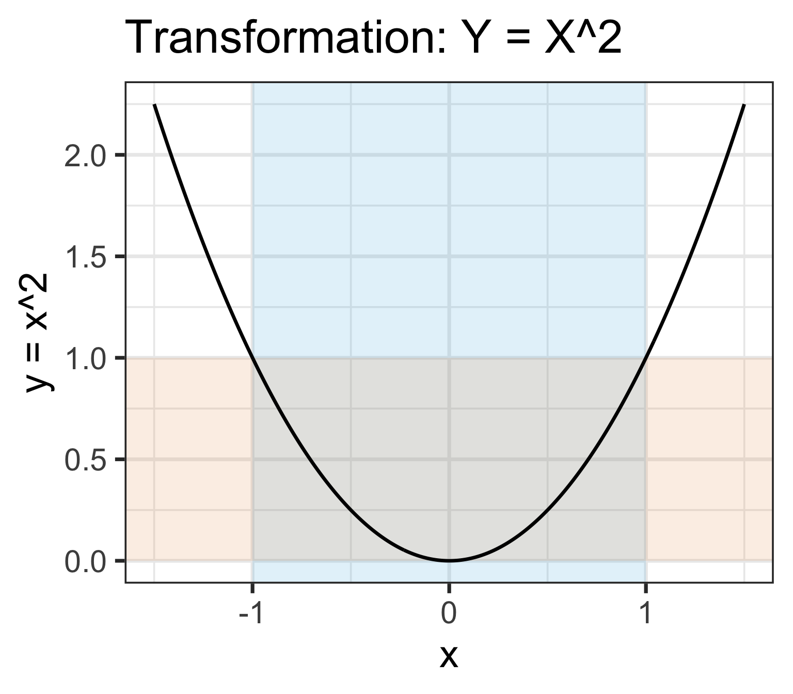
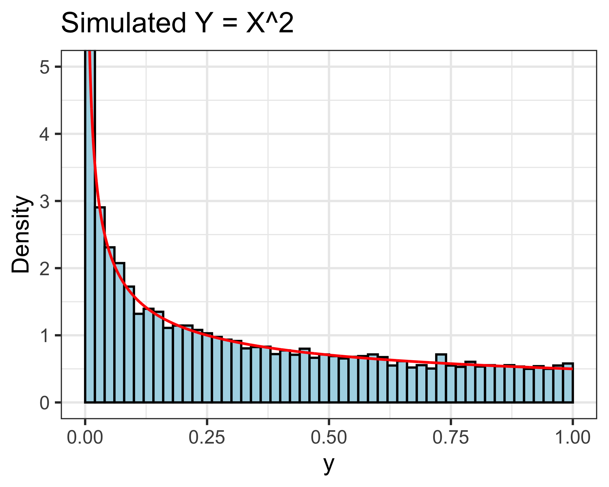

- 1
- Set the random seed once, so we get the same simulation every time.
- 2
-
Save the number of simulations as
reps, so it is easy to change later. - 3
-
Simulate a Uniform(0, 1) value
pfor every simulation, like Lesson 9. - 4
-
Plug each
pinto the inverse CDF to get a simulated value of \(U\).^(1/4)is the fourth root. - 5
-
The linear rescaling: each simulated
ubecomesv = 1 - u.
Lesson 14: Transformations
Learning Objectives
- Find the pdf of a linear rescaling of a random variable
- Find the pdf of a nonlinear transformation of a random variable using the CDF method
Distributions of transformations of random variables
- Often make transformations of RVs
- A function of a random variable is a random variable
- If \(X\) is a random variable and \(g\) is a function then \(Y=g(X)\) is a random variable
- Since \(g(X)\) is a random variable it has a distribution
- Distribution of \(g(X)\) will have a different shape than the distribution of \(X\)
- Two types:
- Linear rescalings: \(g(u) = a + bu\)
- Nonlinear transformations: e.g. \(g(u) = u^2\), \(g(u) = \log(u)\)
- We’ve already seen one! In Lesson 9, we simulated \(X\) by plugging a Uniform(0, 1) value into the inverse CDF
Learning Objectives
- Find the pdf of a linear rescaling of a random variable
- Find the pdf of a nonlinear transformation of a random variable using the CDF method
Linear rescaling
Definition: Linear Rescaling
A linear rescaling is a transformation of the form \(g(u) = a + bu\), where \(a\) and \(b\) are constants
Thus, if we have a random variable, \(X\), then a linear rescaling of \(X\) could be \(M = g(X) = a + bX\)
For example, converting temperature from Celsius to Fahrenheit using \(g(u) = 32 + 1.8u\) is a linear rescaling.
Example of linear rescaling (1/4)
Example 1: Linear rescaling of \(U\)
Let \(U\) be a random variable with \(f_U(u)= \dfrac{4}{15}u^3\) for \(1\leq u \leq 2\). Define \(V=1-U\)
- What are the possible values of \(V\)?
- Is \(V\) the same random variable as \(U\)?
- Find \(P(V \le -0.5)\).
- Find the pdf of \(V\).
- Does \(V\) have the same distribution as \(U\)?
Example of linear rescaling (2/4)
Example 1: Linear rescaling of \(U\)
Let \(U\) be a random variable with \(f_U(u)= \dfrac{4}{15}u^3\) for \(1\leq u \leq 2\). Define \(V=1-U\)
- What are the possible values of \(V\)?
- Is \(V\) the same random variable as \(U\)?
Example of linear rescaling (3/4)
Example 1: Linear rescaling of \(U\)
Let \(U\) be a random variable with \(f_U(u)= \dfrac{4}{15}u^3\) for \(1\leq u \leq 2\). Define \(V=1-U\)
- Find \(P(V \le -0.5)\).
- Hint: rewrite the event \(V \leq -0.5\) in terms of \(U\), then use \(P(a \leq U \leq b) = \int_a^b f_U(u)\,du\)
Example of linear rescaling (4/4)
Example 1: Linear rescaling of \(U\)
Let \(U\) be a random variable with \(f_U(u)= \dfrac{4}{15}u^3\) for \(1\leq u \leq 2\). Define \(V=1-U\)
- Find the pdf of \(V\).
- Does \(V\) have the same distribution as \(U\)?
Let’s simulate Example 1: simulate
- Simulate \(U\) with the inverse CDF, like Lesson 9: \(F_U(u) = \dfrac{u^4 - 1}{15}\), so \(F_U^{-1}(p) = (15p + 1)^{1/4}\)
6head(u_sims)- 6
-
Each row is one simulation: the
vin a row came from theubeside it.
# A tibble: 6 × 3
p u v
<dbl> <dbl> <dbl>
1 0.466 1.68 -0.681
2 0.413 1.64 -0.638
3 0.907 1.95 -0.955
4 0.137 1.32 -0.322
5 0.739 1.86 -0.864
6 0.976 1.99 -0.989Let’s simulate Example 1: summarize
- 1
- One row of summaries of the 10,000 simulations.
- 2
- The proportion of simulations with \(V \leq -0.5\) approximates \(P(V \leq -0.5)\).
- 3
- Same answer: \(V \leq -0.5\) is the same event as \(U \geq 1.5\).
# A tibble: 1 × 2
prob_V prob_U
<dbl> <dbl>
1 0.730 0.730From Example 1.3: \(P(V \leq -0.5) = \dfrac{2^4 - 1.5^4}{15} \approx 0.7292\)
Plot code
4ggplot(u_sims) +
5 geom_histogram(aes(x = u, y = after_stat(density)),
binwidth = 0.05, boundary = 1,
color = "black", fill = "lightblue") +
6 geom_histogram(aes(x = v, y = after_stat(density)),
binwidth = 0.05, boundary = -1,
color = "black", fill = "#E89543") +
7 labs(title = "Simulated U (blue) and V = 1 - U (orange)",
x = "Value", y = "Density")- 4
- Start a plot of the simulations. Each histogram below picks its own column.
- 5
-
Histogram of the simulated
uvalues, scaled like a pdf (Lesson 8). - 6
-
Histogram of the simulated
vvalues, on the same axes. - 7
- Add a title and axis labels.

Summary of linear rescaling
A linear rescaling of a random variable does not change the basic shape of its distribution, just the range of possible values.
It can flip it, widen it, condense it, and/or shift it
But it is not the same distribution: the possible values change
For \(V = a + bU\): \(f_V(v) = \dfrac{1}{|b|} f_U\left(\dfrac{v-a}{b}\right)\)
- In Example 1, \(b = -1\), so we could substitute \(u = 1 - v\) directly into \(f_U\)
Remember, do NOT confuse a random variable with its distribution
- The random variable is the numerical quantity being measured
- The distribution is the long run pattern of variation of many observed values of the random variable
Learning Objectives
- Find the pdf of a linear rescaling of a random variable
- Find the pdf of a nonlinear transformation of a random variable using the CDF method
Nonlinear transformations
What happens when we make a nonlinear transformation, like a logarithmic or square root transformation?
Nonlinear transformations do not necessarily preserve the distribution shape
Examples of nonlinear transformations:
- \(g(u) = u^2\)
- \(g(u) = \sqrt{u}\)
- \(g(u) = \log(u)\)
- \(g(u) = e^u\)
- \(g(u) = \dfrac{1}{u}\)
Finding the pdf of a transformation
Let \(M\) be a nonlinear transformation of \(X\): \(M = g(X)\)
When we have a nonlinear transformation of \(X\), \(M\), we need to follow the CDF method to find the pdf of \(M\)
We follow CDF method:
Start with the pdf for \(X\)
- aka \(f_{X}(x)\)
Translate the domain of \(X\) to \(M\): find the possible values of \(M\)
Find the CDF of \(M\)
- aka \(F_M(m) = P(M \leq m) = P(g(X) \leq m)\)
- Will require manipulating \(g(X) \leq m\) in terms of \(X\) (aka \(X\) alone on the left side)
Take the derivative of the CDF of \(M\) with respect to \(m\) to find the pdf of \(M\)
- aka \(f_M(m) = \dfrac{d}{dm}F_M(m)\)
- Check: \(f_M(m)\) should integrate to 1 over the possible values of \(M\)
Example of nonlinear transformation (1/4)
Example 2: Nonlinear transformation of \(U\)
Let \(U\) be a random variable with \(f_U(u)= \dfrac{4}{15}u^3\) for \(1\leq u \leq 2\). Define \(V=\log(U)\)
- What are the possible values of \(V\)?
- Find the CDF of \(V\)
- Find the pdf of \(V\)
Example of nonlinear transformation (2/4)
Example 2: Nonlinear transformation of \(U\)
Let \(U\) be a random variable with \(f_U(u)= \dfrac{4}{15}u^3\) for \(1\leq u \leq 2\). Define \(V=\log(U)\)
- What are the possible values of \(V\)?
- In this class (and in R), \(\log\) is the natural log, \(\ln\)

Example of nonlinear transformation (3/4)
Example 2: Nonlinear transformation of \(U\)
Let \(U\) be a random variable with \(f_U(u)= \dfrac{4}{15}u^3\) for \(1\leq u \leq 2\). Define \(V=\log(U)\)
- Find the CDF of \(V\)
Example of nonlinear transformation (4/4)
Example 2: Nonlinear transformation of \(U\)
Let \(U\) be a random variable with \(f_U(u)= \dfrac{4}{15}u^3\) for \(1\leq u \leq 2\). Define \(V=\log(U)\)
- Find the pdf of \(V\)
Let’s simulate Example 2
- 1
- Reuse the 10,000 simulated values of \(U\) from Example 1.
- 2
-
The nonlinear transformation: \(V = \log(U)\). We name the column
log_uso it does not replacev\(= 1 - U\) from Example 1. - 3
- The proportion of simulations with \(\log(U) \leq 0.5\) approximates the CDF of \(V\) at 0.5.
# A tibble: 1 × 1
prob_half
<dbl>
1 0.424CDF method: \(F_V(0.5) = \dfrac{e^{4(0.5)} - 1}{15} \approx 0.4260\)
- Why not substitute \(u = e^v\) into \(f_U\)? That gives \(\frac{4}{15}e^{3v}\) (dashed), which does not match!
Plot code
4ggplot(u_sims, aes(x = log_u)) +
geom_histogram(aes(y = after_stat(density)),
binwidth = log(2) / 30, boundary = 0,
color = "black", fill = "lightblue") +
5 geom_line(aes(y = 4/15 * exp(4 * log_u)),
color = "red", linewidth = 1.5) +
6 geom_line(aes(y = 4/15 * exp(3 * log_u)),
linetype = "dashed", linewidth = 1.5) +
7 labs(title = "Simulated V = log(U)",
x = "v", y = "Density")- 4
- Histogram of the simulated values of \(V = \log(U)\), scaled like a pdf, with 30 bars between 0 and \(\log(2)\).
- 5
- The pdf from the CDF method, \(f_V(v) = \frac{4}{15}e^{4v}\), in red.
- 6
- The wrong guess from substituting \(u = e^v\) into \(f_U\), dashed.
- 7
- Add a title and axis labels.

Example of nonlinear transformation: domain (1/4)
Example 3: Nonlinear transformation of \(X\)
Let \(X\) be a random variable with \(f_X(x)= \dfrac{1}{2}\) for \(-1\leq x \leq 1\). Define \(Y=X^2\)
- What are the possible values of \(Y\)?
- Find the CDF of \(Y\)
- Find the pdf of \(Y\)
Example of nonlinear transformation: domain (2/4)
Example 3: Nonlinear transformation of \(X\)
Let \(X\) be a random variable with \(f_X(x)= \dfrac{1}{2}\) for \(-1\leq x \leq 1\). Define \(Y=X^2\)
- What are the possible values of \(Y\)?

Example of nonlinear transformation: domain (3/4)
Example 3: Nonlinear transformation of \(X\)
Let \(X\) be a random variable with \(f_X(x)= \dfrac{1}{2}\) for \(-1\leq x \leq 1\). Define \(Y=X^2\)
- Find the CDF of \(Y\) (we need it on our way to the pdf, \(f_Y(y)\))
Example of nonlinear transformation: domain (4/4)
Example 3: Nonlinear transformation of \(X\)
Let \(X\) be a random variable with \(f_X(x)= \dfrac{1}{2}\) for \(-1\leq x \leq 1\). Define \(Y=X^2\)
- Find the pdf of \(Y\)
Let’s simulate Example 3
- 1
-
\(X \sim \text{U}[-1, 1]\) has \(f_X(x) = \frac{1}{2}\), so we can simulate it with
runif(). - 2
-
The nonlinear transformation: square each simulated
x. - 3
- The proportion of simulations with \(Y \leq 0.25\) approximates the CDF of \(Y\) at 0.25.
# A tibble: 1 × 1
prob_quarter
<dbl>
1 0.505CDF method: \(F_Y(0.25) = \sqrt{0.25} = 0.5\)
- \(X\) was flat, but \(Y = X^2\) piles up near 0: the shape changed!
Plot code
4ggplot(x_sims, aes(x = y)) +
geom_histogram(aes(y = after_stat(density)),
binwidth = 0.02, boundary = 0,
color = "black", fill = "lightblue") +
5 geom_line(aes(y = 1 / (2 * sqrt(y))),
color = "red", linewidth = 1.5) +
6 coord_cartesian(ylim = c(0, 5)) +
7 labs(title = "Simulated Y = X^2",
x = "y", y = "Density")- 4
- Histogram of the simulated values of \(Y\), scaled like a pdf.
- 5
- The pdf from the CDF method, \(f_Y(y) = \frac{1}{2\sqrt{y}}\), in red.
- 6
-
coord_cartesian()zooms the y-axis to 0 to 5, because \(f_Y(y)\) shoots up near \(y = 0\). - 7
- Add a title and axis labels.

Summary of nonlinear transformations
- Nonlinear transformations can change the shape of a distribution
- Always use the CDF method to find the pdf of a nonlinear transformation of a random variable
- Remember to carefully determine the possible values (domain) of the transformed random variable
| Linear rescaling | Nonlinear transformation | |
|---|---|---|
| Changes the distribution? | Yes | Yes |
| Changes the “shape”? | No | Usually |
| How to find the pdf | Substitute into \(f_X\) (and divide by \(\lvert b \rvert\)) | CDF method |